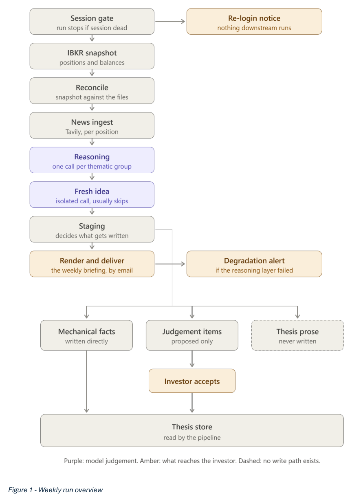

Investment Portfolio Monitoring Agent: Turning Thesis-Driven Research into a Weekly Briefing
The problem
Running a concentrated, thesis-driven equity portfolio (20+ positions across several long-term themes) means the real bottleneck isn’t finding information — it’s reaching the small fraction of a week’s news that actually bears on a specific thesis, out of a much larger volume of short-term noise that doesn’t. Doing that filtering by hand every week doesn’t scale. The goal was an agentic workflow that takes on that filtering end-to-end and hands back a single weekly briefing worth reading, without taking any actual decision-making away from the investor.
Approach
A thesis store as the grounding layer. Every position was already documented during initial research with a valuation floor, named catalysts, kill switches, and staged entry triggers. That research became a structured retrieval layer — one YAML file per position — so the workflow always reasons against the specific investment logic for that name rather than in the abstract.
Reasoning is the only layer that interprets. Price-level triggers are simple enough to check deterministically in Python. Everything else — what a week’s news and price action actually mean for a position — is left to an LLM (Claude, via Claude Code’s headless CLI), with the interpretive output kept in its own field, separate from the factual record, so the investor can see not just the conclusion but the reasoning behind it.
Writing privileges scale inversely with judgement. The workflow helps keep the thesis files current, but purely mechanical updates sync automatically while anything carrying a judgement call is only proposed and waits for the investor to accept it. Thesis prose itself is never rewritten automatically, under any circumstance.
A separate channel for the unexpected. Documented catalysts and risks are, by construction, the things already thought of when the thesis was written. The briefing carries a second channel for anything material that doesn’t map to any of them, so the system doesn’t just confirm the shape of its own prior research.
Failure is disclosed, never hidden. A quiet week and a broken pipeline stage can look identical from the outside — an empty section either way — so a stage failure never just shrinks the briefing silently. It degrades gracefully and fires a separate alert naming the likely cause instead.
System architecture
The weekly run is a fixed, gated pipeline: a dead brokerage session halts everything before it starts (rather than risk a briefing built on stale data), and every step past that point degrades independently on failure instead of aborting the whole run.

Key findings
- Most of the design effort went into restraint, not capability. Keeping retrieval separate from judgement, confining automatic writes to mechanical facts, and distinguishing a quiet week from a failed run don’t make the system more capable — several make it less convenient — but they’re what make its output something to act on directly rather than verify first.
- The access constraint shaped the whole system, not just one component. Interactive Brokers’ retail accounts can’t reach the OAuth path, so the only route is a local gateway process authenticated by a browser login that lapses roughly daily. That single constraint is why the pipeline opens with a session gate, why the practical target was “~30 seconds of human action” rather than full automation, and why the whole thing runs on a local scheduled task rather than anything hosted.
- The honest limitation: the reasoning layer is unvalidated. Output was judged by reading it across real weeks, which is a reasonable bar for a personal tool, but there’s no way to tell whether the model ever missed something a human reading the same articles would have caught — and a miss like that is invisible in a way a wrong call isn’t.
Full report
The full write-up covers the design philosophy behind each constraint in more detail, the build order (nothing was layered on top of a component until the one beneath it was validated against real data), and the integration decisions — including why news retrieval runs through a dedicated search API rather than an LLM’s own web search tool.